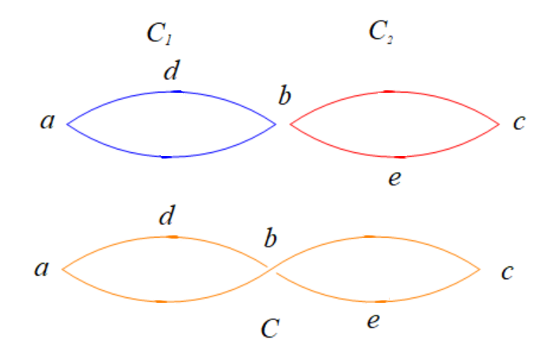

算法导论25 Problems 答案
25-1
a
证明方式和题目20-3-a相似。
充分性：由于\(G\)有一条欧拉回路\(C\)，因此在\(C\)中，当有一条入边进入节点\(v\)，总有一条出边离开节点\(v\)（重复经过节点\(v\)的无向边是不同的）。由于这些边恰好包含了\(E\)中所有的边各一次，只要\(v\)在\(C\)上出现了\(k_v\)次，那么就有\(k_v\)条不同的无向边进入\(C\)，\(k_v\)条不同的无向边离开\(v\)，那么\(v\)的度数为\(2k_v\)，即所有节点的度数都是偶数，原结论成立。
必要性：对于任意一条从\(s\)出发的一条路径\(P\)，它必定能回到\(s\)，使用反证法证明这个结论。如果从\(s\)出发存在一条路径它不能回到\(s\)，也就是说，有一条路径\(P'\)是\(s-v_1-v_2-\dots-v_k\)，并且\(v_k\neq s\)，并且从\(v_k\)之后所有已经没有出边可走。那么令\(v=v_k\)，统计路径\(P'\)得到\(v\)的出现次数为\(k\)，那么可以知道离开\(v\)的边数为\(k-1\)（因为已经没有边走出来了），而进入\(v\)的边数为\(k\)，那么节点\(v\)的度数为\(2k-1\)，这和节点\(v\)是偶数的结论矛盾，因此\(P\)必定是一条回路。那么，接下来我们找出\(G\)的其中一条回路\(C_1\)，那么如果\(C_1\)是一条欧拉回路，那么完成；否则，去除\(C_1\)中的所有边，节点度数的性质仍然保持不变，由于\(G\)是连通图，那么可以找到另一条和\(C_1\)点相交，边不相交的回路\(C_2\)，并且将交点一处整合成一条回路（如下图所示），直到所有的边都已经被使用。

如图所示，我们已经找到了两个环\(C_1:b-d-a-b\)和\(C_2: b-e-c-b\)，那么我们可以整合成回路\(C:b-d-a-b-c-e-b\)。
b
该算法EULER-CYCLE'和题目20-3-b所提出的类似，区别在于EULER-CYCLE在访问完一条边\((u,v)\)后，需要在\(v\)的邻接表删除一个\(u\)。
1 | EULER-CYCLE-UNDIRECTED-DFS(G, A, u) |
c
对于一个\(1\)-正则图\(G_1=(V,E_1)\)，由于每个节点的度数均为\(1\)，因此仅有\(1\)个节点与它相邻。因此\(G_1\)的节点个数必定为偶数，且\(E_1\)是它的一个完美匹配。
对于一个\(2^k\)-正则二分图\(G_{2^k}=(V,E_{2^k}),V=L\cup R\)，由于所有节点的度数都为偶数，因此\(G_{2^k}\)必定存在一条欧拉回路\(C\)。并且\(C\)为\(E\)中的所有无向边都指定了一个方向，并且这条回路的节点是\(L,R\)相间的。不失一般性，我们去掉所有从\(R\)到\(L\)定向的所有边，那么每个节点的度数只剩下原来的一半，即\(2^{k-1}\)，剩下的图是一个\(2^{k-1}\)-正则图，那么继续递归进行操作，直到这个图是一个\(1\)-正则图，那么我们就得到了\(G_{2^k}\)的一个完美匹配。如果我们去掉的是从\(L\)到\(R\)定向的所有边，那么接下来得到的完美匹配和前面得到的完美匹配是不相交的。
最终，整个问题相当于使用了一次分治算法。具体过程由GEN-DISJOINT-PERFECT-MATCHING给出。
1 | GEN-DISJOINT-PERFECT-MATCHING-AUX(G, A) |
接下来考虑程序GEN-DISJOINT-PERFECT-MATCHING-AUX的时间复杂度。每次调用GEN-DISJOINT-PERFECT-MATCHING-AUX时，首先都会对\(G\)中的所有边进行\(O(1)\)时间的处理，接下来将这些边进行均匀地分成两部分进行递归处理。由于这个程序最多递归\(\lg d\)层，因此整个程序的时间复杂度为\(O(E\lg d)\)。
25-2
a
FIND-AUGMENTING-PATH的第10行代码可以改等价地改为\(\delta=\min\{r.\sigma:r\in
R-F_R\}\)，它将可以遍历所有\(R-F_R\)中的节点进行求出，因此时间复杂度为\(O(n)\)。
b
在第11-14行结束后，\(F_L\)中每个\(l\)节点的属性\(h\)都减少了\(\delta\)，而对于\(r\in R-F_r\)，属性\(h\)的值未曾改变。按照\(\sigma\)参数的定义：\(r.\sigma=\min\{l.h+r.h-w(l,r):l\in F_L\}\)可以得知，\(r.\delta\)减少了\(\delta\)。因此只需要插入如下两行代码就可以以\(O(n)\)的时间完成对\(R-F_R\)所有节点\(\delta\)属性的更新。
1 | for each vertex r ∈ R - FR |
c
只需要在每次对集合\(F_L\)更新时，对\(R-F_R\)中的所有节点的\(\delta\)属性进行进行更新即可，一次刷新只需要\(O(n)\)的时间。由于FIND-AUGMENTING-PATH的增长步数最多只有\(n\)次，因此这个步骤在一次调用FIND-AUGMENTING-PATH中，所需要花费的时间为\(n\cdot O(n)=O(n^2)\)。
也就是说，只需要在第26行的下面插入如下两行代码即可。
1 | for each vertex r ∈ R - FR |
d
经过修改后，以及题目25.3-5的修改，得到新版的寻找増广路径算法为FIND-AUGMENTING-PATH'''如下。
1 | FIND-AUGMENTING-PATH'''(w, n, h, match) |
在程序FIND-AUGMENTING-PATH'''的repeat ... until循环中，所有的for循环都是线性的。中间那个用于更新\(R-F_R\)中每个节点的\(\delta\)属性的for循环中，内部的for循环每个节点\(r\)节点最多只能进入一次，然后要么找到了增广路径，repeat ... until跳出，要么被添加进集合\(F_R\)中，之后再也不会进入。除此之外，repeat ... until循环体内的其它所有for循环都是单层的。因此一次repeat ... until循环的时间复杂度为\(O(n)\)，调用一次FIND-AUGMENTING-PATH'''所需要花费的时间为\(O(n^2)\)。
由于匈牙利算法至多需要寻找\(n\)次增广路径，因此优化后的匈牙利算法的时间复杂度为\(n\cdot O(n^2)=O(n^3)\)。
25-3
a
对于原二分图\(G=(V,E),V=L\cup R\)，可以构造完全二分图\(G'=(V,E')\)，即对于\(\forall l\in L,r\in R\)，都有\((l,r)\in E'\)。对于\(\forall (l,r)\in E\)，有\(w'(l,r)=w(l,r)\)，对于\(\forall (l,r)\in E'-E\)，有\(w'(l,r)=-\infty\)。使用图\(G'\)运行匈牙利算法的结果即为所求。
b
与题目25-3-a建立的图\(G'\)一致。令\(\delta=\min\{x(l,r)\mid(l,r)\in E\}\)。对于\(\forall (l,r)\in E\)，有\(w'(l,r)=w(l,r)+\delta+1\)，对于\(\forall (l,r)\in E'-E\)，有\(w'(l,r)=-\infty\)。由于\(G\)必定包含一个完美匹配，因此使用图\(G'\)运行匈牙利算法的结果即为所求。
c
考虑将图\(G=(V,E)\)中的每个节点\(v\)拆分成两个节点\(v_{in},v_{out}\)。通过图\(G\)，构造二分图\(G'=(V',E'),V'=L\cup R\)，其中\(L=\{v_{out}\mid v\in V\},R=\{v_{in}\mid v\in V\}\)。对于\(\forall (u,v)\in E\)，都有\((u_{out},v_{in})\in E'\)，并且\(w'(u_{out},v_{in})=w(u,v)\)。使用题目25-3-b的构造方法，对图\(G'\)求出的一个最大二分匹配\(M'\)，所在\(E\)对应的边集\(M\)即为所求。因为在\(M'\)中，\(G'\)的所有节点都出现了一次。也就是说，在图\(G\)中，求出来的\(M\)都代表了每个节点的一条出边和入边，这意味着这些节点只在一个环中。
25-4
a
\(M^{\ast}\)是最大匹配的一个最优解，并且假设任意匹配的空间为\(S\)，那么有\(M^{\ast}\in S\)。对于分数匹配，假设任意匹配的空间为\(S'\)，对于所有的边，都有\(x(l,r)\in[0,1]\)而非\(\{0,1\}\)，因此\(S\subseteq S'\)，即最大匹配的所有解也是最大分数匹配的解。由于\(M^{\ast}\)是最大匹配，因此\(\forall M\in S,|M|\le |M^{\ast}|\)均成立，即\(M^{\ast}\)是\(S\)中的一个全局最优解，但是\(M^{\ast}\)在\(S'\)中只是一个局部最优解，那么存在一个全局最优解\(x^{\ast}\in S'\)使得\(|x^{\ast}|\ge |M^{\ast}|\)，原结论成立。
b
考虑\(G=(V,E)\)中的其中一个分数匹配\(x\)。那么考虑将\(x\)转换成一个不会更劣的整数匹配\(x'\)。
首先考虑边集\(H=\{(u,v)\in E,0<x(u,v)<1 \}\)。如果\(H\)为空，那么整个过程完成。如果\(H\)为空，那么整个过程结束。如果\(H\)包含一个环\(C\)，那么由于\(G\)是一个二分图，因此\(C\)必定是个偶环。为这个环\(C\)中的所有边进行定向得到有向环\(C'\)，那么\(C'\)中必定有\(|C|/2\)条边是从\(L\)指向\(R\)的，有\(|C|/2\)条边是从\(R\)指向\(L\)的。令\(E_{L}=\{(l,r)\mid (l,r)\in C',l\in L,r\in R\},E_R=C'-E_L\)
不失一般性，考虑消去一条\(E_R\)中的边。令\(\delta=\min\{x(l,r)\mid(l,r)\in E_R\}\)。那么构造新的分数匹配\(x'\)：
\(x'(l,r)= \left \{\begin{aligned} &x(l,r)+\delta & & \text{if}\quad (l,r)\in E_L \\ &x(l,r)-\delta & & \text{if}\quad (l,r)\in E_R \\ &x(l,r) & & \text{if}\quad (l,r)\in E-C \\ \end{aligned}\right.\)
那么在下一轮迭代中，由\(x'\)所诱导出来的边集\(H'\)至少比原来少一条边。最终直到\(H'\)没有环为止。
现在，假设由\(x\)诱导出来的边集\(H\)是没有环的。令\(P\)是\(H\)中的其中一条最长路，令\(s_P,t_P\)表示\(P\)的起点和终点，那么\(s_P\)和\(t_P\)除了\(H\)中的边，其他与\(s_P\)或\(t_P\)相邻的边的分数值\(x\)为\(0\)，因为如果为\(1\)，那么\(s_P\)或\(t_P\)的分数之和大于\(1\)，这是不可能的；如果位于区间\((0,1)\)，那么与\(s_P,t_P\)相邻的这些边也会在\(H\)中，这不是一条最长路。
那么接下来，每次找到一条关于边集\(H\)中长度为\(2\)的路径，并且这条路径中某个节点在\(H\)中出现\(1\)次。不失一般性，假设这条路径为\(a-b-c\)，并且\(a\)在\(H\)中只出现一次。那么考虑去掉边\((b,c)\)，令\(x'(a,b)=x(a,b)+x(b,c),x'(b,c)=0\)（注意此处的\(a\)边权之和仍然不会超出\(1\)，因为\(b\)的边权和不变）。最终得到的新匹配\(x'\)所诱导的边集\(H'\)也会少一条边，最终直到\(H\)不存在长度为\(2\)以上的路径。
最终，对于\(\forall (u,v):x(u,v)>0\)，由于\(H\)中不存在长度至少为\(2\)的路径，因此只需要令\(x'(u,v)=1\)。那么得到\(x'(u,v)\ge x(u,v)\)。最终得到了一个比分数匹配可能更优的整数匹配，原结论成立。
大致的过程由GEN-INTEGER-MATCHING给出。
1 | GEN-INTEGER-MATCHING(G, x) |
c
与题目25-4-b类似，改动的地方在于：
- 当考虑是让\(E_L\)和\(E_R\)中的边消去一条时，不是再随便消去，而是计算\(\displaystyle{s_L=\sum_{(u,v)\in E_L}x(u,v)}\)和\(\displaystyle{s_R=\sum_{(u,v)\in E_R}x(u,v)}\)的值，如果\(s_L>s_R\)，那么选择消去\(E_R\)的边，否则选择消去\(E_L\)中的边。这将会使得分数匹配的解更优。
- 去除长度至少为\(2\)的路径时，不能再使用以上的方法，因为有可能\(w(b,c)>w(a,b)\)，使得解的最优性降低。做法是：在\(H\)中选择一条长度至少\(2\)的路径\(P\)，并且\(P\)两端的节点在\(H\)中只出现一次。可见，\(P\)是一条在点集\(L,R\)交替的路径，为\(P\)进行定向得到\(P'\)。令\(F_{L}=\{(l,r)\mid (l,r)\in P',l\in L,r\in R\},F_R=P-F_L\)，考虑从\(F_L\)或者\(F_R\)消去一条边，计算\(\displaystyle{t_L=\sum_{(u,v)\in F_L}x(u,v)}\)和\(\displaystyle{t_R=\sum_{(u,v)\in F_R}x(u,v)}\)的值，如果\(t_L>t_R\)，那么选择消去\(E_R\)的边，否则选择消去\(E_L\)中的边，这个过程和为消去环的过程相同。
其他过程和25-4-b一致，这说明可以将一个带权分数最大匹配转化成一个更优的带权整数最大匹配，使得原结论成立。大致的过程由GEN-INTEGER-MATCHING-WEIGHTED给出。
1 | UPDATE-X-FRACTIONAL-MATCHING(C, x, w) |
d
令图\(G=(V,E),V=\{a,b,c\},E=\{(a,b),(b,c),(a,c)\}\)。
那么，图\(G\)的最大整数匹配\(|M^{\ast}|\)为\(1\)，为其中一条边。但图\(G\)的最大分数匹配\(|x^{\ast}|\)为\(1.5\)，其中\(x^{\ast}(a,b)=x^{\ast}(b,c)=x^{\ast}(a,c)=0.5\)。
25-5
令图\(G=(V,E)\)为题目中所给定二分图，\(V=L\cup R\)。本题将考虑使用差分约束来求解。那么对于\(\forall l\in L\)，有\(l.d=l.h\)，并且\(\forall r\in R\)，有\(r.d=-r.h\)。那么给定匹配\(M\)，问题转化为求解所有节点的\(d\)属性，使得：
- \(\forall l\in L,r\in R,l.d-r.d\ge w(l,r)\)都成立。
- \(\forall (l,r)\in M^{\ast},l.d-r.d= w(l,r)\)都成立。
考虑构造如下约束图\(G'=(V',E')\)。其中\(V'=V\cup\{v_0\}\)。那么考虑将如下三种边加入\(E'\)中：
- \(\forall v\in V,(v_0,v)\in E\)，都有\(w'(v_0,v)=0\)。
- \(\forall (l,r)\in M^{\ast}\)，都有\((l,r)\in E',w'(l,r)=-w(l,r),(r,l)\in E',w'(r,l)=w(l,r)\)。
- \(\forall (l,r)\in E-M^{\ast}\)。都有\((l,r)\in E',w'(l,r)=-w(l,r)\)。
对约束图\(G'\)以\(v_0\)为起点调用BELL-MANFORD算法后，计算出了每个节点的\(d\)属性，那么根据\(d\)属性可以计算出\(h\)属性，最终\(h\)属性为所求。整个算法的时间复杂度为\(O(|V|^3)\)。